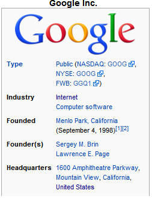

Summer of Code at the Interface Ecology Lab!
The Interface Ecology Lab is a mentoring organization for the 2011 Google Summer of Code. We are initiating a suite of open-source projects that would benefit from the enthusiasm and hard work of students looking to gain a foothold in the research world and the open source community. Four student interns were supported.
Google Summer of Code is a unique opportunity for students to get paid over the summer for working on open-source projects. Google offers a stipend of $5000 for eligible graduate and undergraduate students at accredited colleges and universities across the world. This unique internship opportunity offers students the chance to remotely collaborate with mentors from the Interface Ecology Lab, developing open-source software for the benefit of the community.
The Interface Ecology Lab brings forth the S.IM.PL (Support for Information Mapping in Programming Languages) initiative, developing cutting edge open-source software tools to help programmers work with information spread across programming languages, digital libraries, the semantic web, and other online sources. In addition to this, the lab develops new hardware sensor technologies to make multi-touch a plug-and-play option for any existing display.
We invite prospective student interns to discuss with us their projects of interest either at our mailing list (ecologylab_soc at googlegroups dot com). or join us at our IRC Channel #ecologylab on irc.freenode.net. Contact as soon!
The project ideas for this summer are:
- S1: S.IM.PL Serialization: Generate XML Schemas from Translation Scopes
- S2: S.IM.PL Serialization: Support XML Namespaces
- S3: S.IM.PL Serialization: Cross-language code generation from Translation Scope XML Documents
Code generators for Java, C++, JavaScript, Python, and PHP, mostly written in Java and C#. - O1: OODSS: Services WebSockets Extension
A simplified web service framework, built on S.IM.PL, with object oriented web service definitions with embedded message semantics. Extended with HTML5 WebSockets to support high performance web applications. - M1: Meta-Metadata ORM
Enable storing and searching strongly typed metadata objects in DBMS, by integrating meta-metadata with Hibernate. Reuse metadata wrappers across curated information sources. - M2: Meta-Metadata Authoring Tool
Build an interactive in-browser meta-metadata authoring tool for creating metadata structure wrappers. - M3: Meta-Metadata Wrappers for Social Media
Use meta-metadata to develop a slick new cross-platform API for Twitter, Facebook, ... - M4: Meta-Metadata for Tabular Data - Connect Dynamic with Static Types
Design and implement functionality to support representation and extraction of tabular data from webpages. - Z1: Flexible Sensor Configuration GUI
Develop a GUI for easy configuration and setup of a ZeroTouch Sensor. - Z2: High-bandwidth USB Streaming Interface
Develop a high-bandwidth USB protocol for communicating sensor data to the PC.
You can find our application template at the bottom of this page
You can find more information about our organization, intentions for GSoC, and IRC channel here (sections for our Mentoring Organization Application).
Support for Information Mapping in Programming Languages (S.IM.PL)
S.IM.PL serialization is a framework for binding serialized information to and from strongly typed structured objects in popular programming languages. Key features are an inline metalanguage and translation scopes, which represent sets of bindings between object declarations and the semantics of their serialization. Currently, we support declarations in Java and C#, with Java, C#, and Objective-C as target languages. Data binding is supported in multiple formats such as XML, JSON, and binary codes. Support is planned for additional languages, such as Python and C++, and for alternative serialization formats, such as YAML.
When writing distributed applications such as web services, programmers use XML Namepsaces and XML schemas to define the structure of their xml document. In theory XML Namespaces are good, but utilizing them results in verbose documents. We believe that, in practice, XML Schema is not the best way to describe XML documents when working with object-oriented programming languages. XML Schema is maintained outside of the source code. The binding between the XML documents and their corresponding object structures is difficult to maintain.
Our alternative approach uses translation scopes and inline metalanguage for describing the structure of a message from program objects. The description for serialization and deserialization is integrated in the source code in the same place where the data structures are defined. Translation scopes represent these internal data structures, and can also be serialized as an XML document.
Project S1 - S.IM.PL Serialization: Generate XML Schemas from Translation Scopes
Translation scopes are S.IM.PL's serialization's program-centric means for representing the semantics of serialized objects as documents. XML Schemas are W3C standard document-centric means for representing the semantics of serialized objects, which programmers typically must then write code to conform to. This project will develop bi-directional translation mechanisms for bridging these approaches. The first mechanism to develop will translate a translation scope into an XML Schema. This will be similar to the present functionality that cross-compiles a translation scope into source code in languages such as C# and Objective C. The other program will generate a translation scope, and from it, matching classes in Java, C#, and Objective C source code, from an XML Schema. Since the feature sets do not perfectly coincide, the basis of these mechanisms will be the overlap in what can be expressed with both languages. An example of what cannot be expressed in an XML Schema is to represent a collection as a map instead of as an array/list. An example of what cannot currently be expressed in an XML Schema are constraints on values, beyond primitive types and enumerated types.
Project S2 - S.IM.PL Serialization: Support XML Namespaces
XML Namespaces are a means for encapsulating a set of tag/element bindings, and associated nested data structures. While S.IM.PL translation scopes enable such encapsulation of binding sets, they do not presently enable combining serialized results of independently applying the bindings from multiple translation scopes into a single document. (Actually, translation scope inheritance does enable this, but only when there are no potential clashes between tag names.) S.IM.PL does presently enable deserialization of documents via the @simpl_tag metalanguage construct, but this is not extensible. This project will build on S.IM.PL's translation scope mechanism to develop modular support for mapping a translation scope to a namespace prefix, when combining multiple translation scopes for interpreting a class of documents that encompass multiple namespaces.
Project S3 - S.IM.PL Serialization: Cross-language code generation from Translation Scope XML Documents
Currently code generation for supported programming languages uses reflection on existing Java source classes and their inline S.IM.PL annotation. An idea for the summer of code student is to extend the functionality of the S.IM.PL framework to support code generation of the objects in the languages given the translation scope XML document. This will allow services to publish the translation scope as an XML document, enabling the service consumers to automatically generate the object source code in a language of their choice. Please choose Project S3a, S3b, or S3c.
Project S3a - S.IM.PL Serialization: Cross-language Leveling
While S.IM.PL serialization is a cross-platform technology, some features are missing in some languages. Aside from getting inside the innovative structure of S.IM.PL serialization, this project promotes comparison and contrasting of features across programming languages.
Translation Scopes have so far always been generated from Java source annotated with S.IM.PL metalanguage. Generating Java code from translation scopes is crucial for deriving equivalent Java classes from those defined in C#, and also for generating Java from XML Schemas.
Java S.IM.PL supports the de/serialization of object graphs, as well as features, such as simpl_composite_as_scalar, for BibTeX de/serialization. It supports de/serialization of enumerated types. These features need to be ported to C#.
Java S.IM.PL supports the de/serialization of object graphs, as well as features, such as simpl_composite_as_scalar, for BibTeX de/serialization. It supports de/serialization of enumerated types. These features need to be ported to Objective C. Providing Objective C support for
enum is more difficult than C# / Java, because of reduced support for the
representation of enum values in Objective C.Project S3b - S.IM.PL Serialization: Generating C++ Code
Presently, S.IM.PL Serialization only supports peforming object de/serialization in languages that support reflection. To accomplish this, runtime code uses the compiled translation scope and its cached reflection objects. Meanwhile, cross-language object translation generates only object-specific field definitions, calling generalized de/serialization methods. To peform de/serialization in languages without reflection, this program will need to generate object-specific source code for de/serialization methods, while using translation scopes for cross-language translation.
Project S3c - S.IM.PL Serialization: Generating JavaScript, Python, PHP, Ruby Code
Presently, S.IM.PL Serialization only supports JavaScript object deserialization via JSON. This supports developing code that operates on objects generated, for example, by a web service, and sent to a client. However, there is no error handling. No constructors are generated. Thus, there is little to no support for building objects in a JavaScript client, serializing them with JSON, and sending these, for example, to a web service. Likewise, it would be useful to explicitly develop code generation pathways, using S.IM.PL serialization's type mechanisms, to optimize using S.IM.PL objects in Python, PHP, and Ruby.
Requirements
Students interested in applying for this project need to be experienced in Java programming and have a working knowledge of project-specific target languages. During the first couple of weeks of the summer, the student is expected to familiarize themselves with the S.IM.PL annotation framework.
Object-Oriented Distributed Semantic Services
The Object-Oriented Distributed Semantic Services (OODSS) framework supports developers in defining web services easily by enabling them to specify the data sent over the wire, its serialized form, and the operations upon it together in one place. OODSS layers on our Support for Information Mapping in Programming Languages (S.IM.PL), which embeds the semantics of serialization directly in code through inline meta-language. OODSS innovates in the space of web service technologies by integrating the definition of web service semantics into source code, significantly lowering the overhead of development, as opposed to other frameworks that require parallel development of services in multiple files and languages.
Project O1: WebSockets Extension
With the advent HTML 5 WebSockets, we plan to migrate OODSS to use WebSockets as it's underlying TCP protocol. WebSockets are an extension to the traditional HTTP protocol that enables clients and servers to easily communicate asynchronously over persistent, bi-directional, full duplex connections. This will enable cross-platform development of OODSS applications, increasing the framework's scope and enabling developers to quickly develop services and deploy them on many different platforms. We envision deploying OODSS to many different platforms including Java, .NET, and JavaScript. This project will also port the OODSS WebSocket framework to the mobile Android and Apple iOS platforms. We will integrate with existing open source projects, such as jWebSocket and SuperWebSocket; this integration will facilitate collaboration with these other projects.
Currently, OODSS uses a custom TCP protocol similar to HTTP to support connection-oriented message passing between client and server applications. By using S.IM.PL, OODSS abstracts out the serialized scheme of transmitted data. Developers are able to serialize and transmit complex data structures using XML, JSON, and/or Type-Length-Value encoding (a concise binary data format). OODSS also supports basic run-length encoding of these formats for optimized protocol efficiency.
We expect this project to benefit participating students as they gain experience defining what the next generation of web services software looks like. Students also have an opportunity to choose an interesting platform that they wish to learn and develop an exciting web applications framework for that platform.
Deliverables
Initially, students will be responsible becoming for familiar with S.IM.PL framework and the WebSockets protocol. Each student will be expected to develop a WebSocket OODSS implementation for a particular platform. In order to support OODSS server development, we explicitly have an immediate need for Java WebSockets integration.
Requirements
Interested students should be familiar with Java and a combination of the aforementioned programming languages and platforms. We are open to students who show initiative and wish to go beyond the specified platforms. Students will preferably also be familiar with object-oriented, multi-threaded, and basic network protocol design paradigms.
Meta-Metadata
Meta-metadata is an open source framework addressing problems associated with supporting metadata semantics for diverse information sources. We define an information source as a type of document, differentiated from others by template-driven structure, published by a website or digital library, and functionally accessed by URL pattern, mime type, or other selector. An application developer authors meta-metadata wrappers to specify the life cycle of metadata semantics for an information task, including structure of the metadata, rules for extracting from sources, operations performed, and presentation guidelines. The framework converted these wrapper specifications into corresponding object definitions in target source languages (e.g. Java, C#, JavaScript) at compilation time. It extracts metadata from such information sources at runtime into strongly-typed instances of the defined metadata objects, using methods such as XPath, object-XML mapping and regular expressions. A guide to the meta-metadta language and architecture can be found here. The current repository of curated information sources is located here [user=anonymous, pwd=anonymous].
Meta-Metadata ORM
You will develop a web service enabling people to extract, persist and reuse metadata from curated information sources, and deliver a set of client libraries that support rapid development of metadata-related applications by wrapping the service, in conjunction with OODSS. As the result, desktop and web application developers will be able to install the client library in target programming language such as JavaScript, submit a URL through the library to the service, and obtain parsed metadata objects. A persistent store behind the service will cache extracted metadata objects.
During this project, you will get deep insights into the metadata lifecycle, the meta-metadata language and architecture, S.IM.PL Serialization, and Object-Oriented Distributed Semantic Services (OODSS. You will grow familiar with the metadata and semantics related research fields such as the semantic web and digital libraries. You will become involved in dynamic class loading in Java and C#. You will work/play with contemporary techniques which may include web services, Object-Relational Mapping, Postgres and CouchDB. The results of this project will impact the community with a readily usable service and library for building smart, semantic-aware information browsing, navigation, and visualization applications.
Prerequisites
To make this happen, you should have clear concepts of and abundant experiences with the Java language and object oriented programming. Knowledge of XML, JSON, and databases are necessary. Experiences with building web applications or services will be a plus, though not necessary.
Deliverables
- You will first familiarize with the framework by writing an application using meta-metadata, such as a RSS reader.
- You will work with the mentor to resolve design decisions and generate an initial design. The design should be documented and archived.
- You will develop and test each module as a deliverable. Modules will at least include one for metadata extraction, one for service handling, and one for persistence. Meanwhile you will work with the mentor to iteratively improve the design.
- You will put modules together to form the final system as a deliverable, which will be inspected by the mentor.
Project M2: In-browser Meta-Metadata Authoring Tool
Currently, meta-metadata wrappers are authored manually as XML files. The application developer experiences a disconnect between authoring meta-metadata wrappers in a text editor and finding XPath expressions in the web browser by examining the DOM. This process can be difficult and time-consuming even for an experienced developer.
The student will develop an in-browser meta-metadata authoring tool that supports defining metadata structure, as a strongly typed object, and using the DOM from the browser to facilitate semi-automatic derivation of XPath expressions. The meta-metadata author will use the new tool to define metadata fields by selecting HTML elements and specifying names and types for them.
For example, if an application developer is authoring a wrapper for Google Books, s/he can select the book title in the web browser and choose to define this element as the field "title". Next, the developer can select the list of authors and define a field "authors" using a collection field. The tool will use the DOM to automatically derive an XPath expression. The tool will also need to visualize currently defined metadata structure to help the developer in authoring a wrapper.
This tool will enable a much larger audience to gain access to the rich functionality of the meta-metadata framework. More information sources will be curated by people authoring meta-metadata tailored to their own needs. By sharing authored meta-metadata, the framework will transform a portion of the web into services by extracting structured data mapped onto objects in a supported programming language, such as Java and C#. This enables a variety of opportunities for semantic-aware, rich-experienced applications.
Prerequisites
Interested students should be familiar with Java programming language and web development techniques, including HTML, Javascript, XML, and CSS. Knowledge of browser extension development will be a plus.
Deliverables
- You will first develop familiarity with the meta-metadata language and architecture by authoring a wrapper for an information source.
- You will create mockups and storyboards to design visual elements and interaction.
- You will work with the mentor to resolve design decisions and generate an initial design. The design should be documented and archived.
- You will continue to author meta-metadata wrappers to verify functionality and usability.
- You will iteratively construct a final tool, which will be inspected by the mentor.
Project M3: Authoring meta-metadata wrappers for Social Media
For this project, the student will author meta-metadata wrappers for social media information sources, such as Facebook, Twitter, YouTube, Blogger, LiveJournal, Reddit, and Google Reader. The student will define semantic actions, such as using the hashtags from a tweet to generate twitter search queries and crawl the space of tweets on a specific topic. The student will be responsible for linking connections in the metadata across information sources. Along with metadata structure for each source, the student will be implement new semantic actions that arise from these use cases. If another student is working on Project 2, this student will make use of beta release implementations of that tool to provide feedback.
The authored meta-metadata wrappers will support application developers of information systems in working with social media sources. New interactions with and visualizations of information will be made possible thanks to these wrappers.
The student will gain an understanding of the role metadata semantics plays within information systems, and how curation of these semantics are critical to designing engaging human experiences with information.
Prerequisites
Interested students should be familiar with the Java programming language and XML. Familiarity with social media sources is a plus.
Deliverables
- You will first develop familiarity with the meta-metadta language and architecture by authoring a wrapper for an information source.
- You will work with the mentor to develop a list of social media information source that you will author wrappers for.
- With the completion of each wrapper, the mentor will inspect the work and provide feedback.
Project M4: Meta-Metadata for Tabular Data - Connect Dynamic with Static Types
Today, Meta-Metadata allows specifying field names and how to extract their values from web pages. Each meta-metadata field is associated with a corresponding statically typed metadata field in a fixed, strongly typed metadata subclass. Since the Java source code is generated from the Meta-Metadata document, the field name and type information is required before a web page is downloaded and parsed. However, as seen in the image on the right, many web pages display tabular data, whose field names can change from page to page. For example, the labels for the infobox for Google are different than those for the article on Tigers. Such presentation of tabular data is common on many websites, such as amazon and newegg.
You will design a dynamic typing mechanism to specify the extraction and internal representation of such forms of tabular data, in conjunction with fixed, static metadata subclass types. This will include details on how metadata fields can be generated on-the-fly based on the information resource being parsed. Initially, you may consider only solutions for simple two column key-value pairs, but you will need to extend this to other forms of multiple column tabular information on websites. This ability to robustly represent and extract information from dynamically evolving information types will empower software developers to build more data driven applications.
Prerequisites
Interested students should be familiar with the Java programming language (including Reflection) and XML. You must have an understanding of dynamic and static type systems in programming languages. Previous use of meta-metadata for information extraction is a plus.
Deliverables
- You will first develop familiarity with the meta-metadata language and architecture by authoring a wrapper for an information source.
- You will work with the mentor to develop and implement the software design for such flexible data formats.
ZeroTouch

ZeroTouch is a novel free-air, multi-touch sensing technology, aimed at bringing the magic of multi-touch interaction to the open-source community. ZeroTouch offers low-latency sensing of 20+ fingers at a time, in a form factor that is trivially integrated with existing LCD displays. The hardware has gone through several intensive design iterations and is robust enough to be deployed in almost any scenario requiring multi-touch input. For details on the ZeroTouch hardware, you can refer to the technical paper.
There is also a video describing ZeroTouch available.
Project Z1: Flexible Sensor Configuration GUI
LCD monitors come in all shapes and sizes, and it's essential for users and developers to be able to configure the sensor readout to their particular configuration. The first Summer of Code project for ZeroTouch, is a GUI that can be used to configure the ZeroTouch sensor without the end user having to write any code to do so. This means designing a program that lets you input your particular configuration of ZeroTouch modules, and then tailor the visualization appropriately to the configuration. This will involve both configuration on the host PC as well as the microcontroller, including a protocol to negotiate communication between the two.
Due to the hardware/software integration required with this project, the student will be provided with a ZeroTouch sensor for development and a Cypress PSoC 5 microcontroller which controls the ZeroTouch sensor. The software on the host computer is a cross-platform variant of the Community Core Vision library created by NUIGroup.
Project Z2: High-bandwidth USB Streaming Interface
The second project around ZeroTouch is development of a USB Audio Streaming interface on the Cypress PSoC 5 microcontroller. This would allow the sensor to plug-and-play with any device that supports USB audio interfaces, with no need for a specialized driver. While the Audio interface wouldn't actually be used for audio, it would act as a high-bandwidth conduit for low-latency sensor data to be sent to a program on the host for visualization of touch points. This means that the open-source ZeroTouch sensor could be used with devices from PCs to netbooks to iPads.
Student Requirements
Student should ideally have some experience with microcontrollers, USB communication, and C/C++. OpenGL experience and Computer Vision experience are big plusses.
Application Template
Please use the following format and guidelines when preparing your application
General Information
- Name
- School Affiliation
- Project Title
Logistical Information
- Timezone
- Typical working hours (in your local timezone)
- Skype, IRC, GChat, and other Instant Messanging Handles
Short Bio
Describe your previous experience in software or hardware development and what skills you bring to the table. Tell us what brought you to the open-source development community and explain how it fits with your other pursuits in life, academic or otherwise.
Motivation
2 to 3 paragraphs describing your motivation for working on the project you have chosen. What you expect to gain from working on the project, why you are interested, and what you believe to be the expected benefits to the open-source community.
Deliverables and Timeline
In roughly a page of text, breakdown your selected project into a set of milestones or deliverables and set realistic timetables for accomplishing these deliverables. Include a GANTT chart showing your planned progress over the summer. Explain the deliverables that are "must-haves", as well as expanding on future work that you may or may not accomplish, time permitting. Keep in mind that some things may take longer than you originally anticipated, so be sure and include contingency plans for such circumstances. This is the heart of your proposal.
Communication
Write a short paragraph detailing how you plan on keeping in communication with your project mentor and ensuring that your deliverables are on time. Will you have weekly Skype meetings? Is email your preferred method of communication? How do you plan to keep us informed of both progress as well as problems?
Background
Anything else that you want to let us know about yourself, about the project, or any other information you think would help your application should be included as well. This includes other projects you may have worked on, code samples you are particularly proud of, academic publications, your personal blog, software development experience, education, etc. Remember, you are trying to sell yourself as the right person for the job! Anything that would help convice us of that should be in your application.